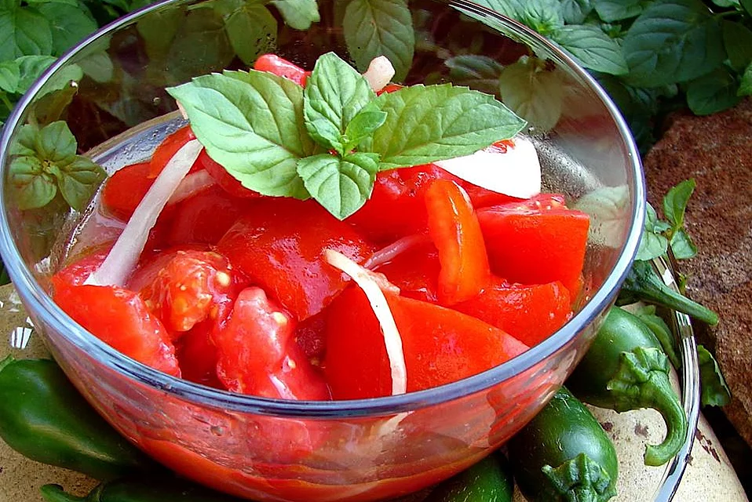

Tomato Salad Recipe

The perfect accompanyment for the greatest lasagna recipe known to man!
A simple recipe for a perfect italian side dish.
Ingedients
- 7 tomatoes
- 1 small yello onion
- 0.5 cup white sugar
- 0.5 cup distilled white vinegar
- 0.5 cup vegetable oil
- salt and pepper to taste
Directions
- Thinly slice the tomatoes. Cut the onion in half through root end, then thinly slice into half-circles.
- In a large bowl, toss together tomatoes, onion, sugar, vinegar, oil, salt, and pepper. You may adjust the amounts of vinegar and sugar according to your taste. Serve at room temperature.
Return to main page
>